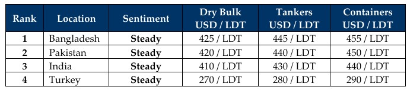

inWeekly Demolition Reports02/03/2026

Whackos Attacking Reality — WAR — is literally the definition of the weekend as the Middle East descended intoall-out chaos between the U.S. & Israel on one side and Iran on the other, leaving regional and international markets bracing for the inevitable whirlpool of global insanity that is about to suck the entire world into short-term (at the very least) tumult.
Oil was already on its way up during the week, but as the weekend came around, it spiked over 10%, jumping from around USD 63/barrel last week to nearly USD 71.90/barrel at the time of writing. The Baltic Exchange was also on its way up (rising 1.1%) but remained comparatively subdued in comparison to oil futures…yet. The Cape, Panamax, and Supra indices all climbed 0.2%, 1.4%, and 3% respectively. Currencies, too, took a hammering, as all of the major ship recycling destinations registered declines across the board. Local steel plate prices also declined across the board, albeit marginally, likely waiting for Monday to turn around before deciding whether to join the ranks of rising rates.
The news immediately worsens for the maritime industry as insurance premiums, bunkers, voyage insurance, blockages, delays, and charters running afoul are just the tip of this ballooning iceberg while the dust settles amid a still inexplicable war campaign that is reportedly set to continue for at least another four weeks — which clearly means buckle up, folks.
Especially as calls for calm and de-escalation intensify but are reportedly falling on deaf ears on the Iranian side following the assassination of Iran’s Supreme Leader in his compound and over 60 others, including children at a local school, according to U.S. sources.
The resulting backlash and retaliation from the pariah state have seen several major Middle Eastern states (Qatar, UAE (Dubai, Abu Dhabi), Oman and many more) come under direct Iranian fire across much of the last 36 hours. Iran has also reportedly halted shipping through the Strait of Hormuz, while the cancellation of thousands of regional and international flights to and from the region is another immediate knock-on effect to trade and commerce — not only in the region, but globally — as the rest of us wait with bated breath to see how the coming week unfolds.
As such, ship recycling activity, being so close to the action, has taken a back seat for now, as markets stall in anticipation of further drama and a lack of sales once again filters through to recycling markets that have already been deprived of tonnage due to recurring geopolitical setbacks. Not since the days of COVID have we seen such a significant disruption affect a single region so directly, with ripple effects spreading across the globe as the world wakes up to Monday and another conflict, with the next steps likely to reshape global politics and affect markets once again to a significant and unpredictable degree.
For Week 9 of 2026, GMS Market Rankings / vessel indications are as below.

📄 Download PDF: Ship-recycling-market-insight-Week-09-02-27-2026-W.A.R.pdfSource: GMS,Inc.https://www.gmsinc.net/gms_new/index.php/web